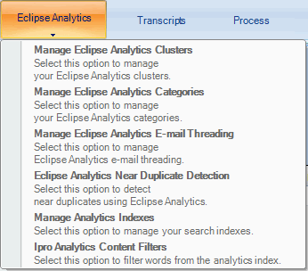
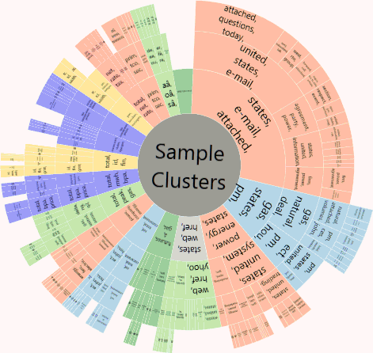
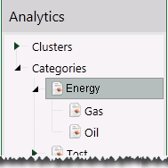

Note: Only a member of the Super Admin group can manage

Analytics searching
Clustering
Categories
Email threading
Near-duplicates detection
Content Filters
Clusters in
|
|
Note: Only a member of the Super Admin group can manage |
This section explains how to create and manage clustering, categories and analytics search indexes.
Clustering groups and sorts documents based on content that is conceptually similar. This example shows how clusters appear in

Clustering is based on an algorithm that finds the general major groupings and minor groupings of the data and presents cluster results in a balanced hierarchy. The number of cluster levels, size, and other settings can be adjusted before a cluster is created. You may choose to cluster the entire case or a selected saved search.
In

For more information on clusters, watch the
For more information about defining clusters, see
Categories identify specific types of documents based on the analytics index. This type of index can be used when you have very large amounts of data and you know the key issues or topics that need to be found. It relies on carefully selected training and example items that exemplify the categories of interest. This example shows how categories appear in

The way in which a category index processes case data is more efficient from a processing standpoint—categorization can process very large quantities of data in a reasonable amount of time. For effective results, though, the training and example items must provide a good basis for the categories being defined. For more information on categories, watch the
For more information about defining categories, see
All email users are familiar with email conversations that go back and forth among various contributors. The “conversation” is included in each email, and a final email contains the complete conversation, similar to the “John Smith” email in this figure.

For more information about configuring email threading, see
This
The metadata of the items identified as part of a near-duplicate group will be updated with a group ID to identify the near-duplicate group to which the items belong. For more information on near duplicate detection, watch the
For more information on configuring near duplicate detection, see